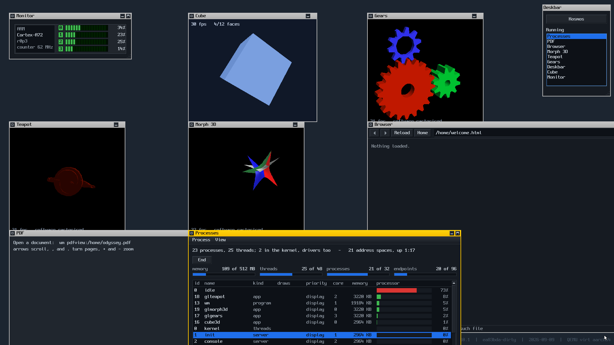
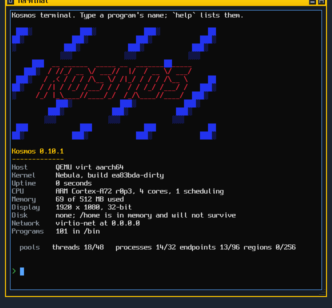

██ ███ ░████░ ▒████▒ ███ ███ ░████░ ▒████▒ ██ ▓██ ██████ ▒██████ ███ ███ ██████ ▒██████ ██ ▒██▒ ▒██ ██▒ ██▒ ▒█ ███▒▒███ ▒██ ██▒ ██▒ ▒█ ██░██▒ ██▒ ▒██ ██ ███▓▓███ ██▒ ▒██ ██ █████ ██ ██ ███▒ ██▓██▓██ ██ ██ ███▒ █████ ██ ██ ▒█████▒ ██▒██▒██ ██ ██ ▒█████▒ █████▒ ██ ██ ░█████▒ ██░██░██ ██ ██ ░█████▒ ██▒▒██ ██ ██ ▒███ ██ ██ ██ ██ ██ ▒███ ██ ██▓ ██▒ ▒██ ██ ██ ██ ██▒ ▒██ ██ ██ ▒██ ▒██ ██▒ █▒░ ▒██ ██ ██ ▒██ ██▒ █▒░ ▒██ ██ ██▓ ██████ ███████▒ ██ ██ ██████ ███████▒ ██ ▒██ ░████░ ░█████▒ ██ ██ ░████░ ░█████▒
A microkernel operating system with a userland written entirely in Lua.
An operating system I wanted to exist
A microkernel with a userland written entirely in Lua. A graphical desktop, a journalled filesystem, a TCP/IP stack and a web browser — on AArch64 and x86-64, in under 6,500 lines of kernel.
A personal experiment, and it is worth saying so first. No users, no compatibility to keep, no deadline — which is exactly what makes it possible to take decisions a commercial system cannot, and to undo them when they turn out to be wrong.
See it running
All of it software rendered. There is no GPU driver.





Run it
One command. Nothing to clone, nothing to build, no toolchain — you need only QEMU, which is the one thing it cannot fetch for you.
sh -c "$(curl -fsSL https://raw.githubusercontent.com/dcibils-neuratek/kosmos/main/get-and-run-kosmos.sh)" -- -b "wm"The framebuffer size is compiled in, so a smaller screen wants the other
build: add -r 1280x720. On Windows, WSL runs the line above
unchanged. The repository
has the native route and the flags that are not guessable.
The idea
The bet is BeOS's, updated: a desktop that feels instant on hardware that exists now. Not fast on average — bounded. Input reaches the thing that draws without waiting behind whatever else is running, because responsiveness was a design constraint rather than an optimisation done later.
What is different is where BeOS had no answer. BeOS was monolithic, with the drivers and the filesystem inside the kernel; underneath this one is a microkernel, capabilities instead of ambient authority, and a namespace per process instead of a global filesystem. Those come from QNX, seL4 and Plan 9.
It is not Unix and not POSIX. No fork, no
exec, no signals, no pipes, no sockets, no file descriptors,
and no path you can reach without being handed a namespace. If a port asks
for one of those, the port gets patched.
That freedom is the whole point. It is not a product and not trying to replace anything — it is a thing built to understand how these things are built, and the reasoning behind every decision is written down, including the ones that turned out wrong and were undone.
What it is built out of
A microkernel, from QNX
Threads, address spaces, IPC and capabilities. It does not know what a file is. Every driver is a process behind its own address space.
Capabilities, from seL4
A syscall takes an index into your own table. What you were not handed, you cannot name — so you cannot reach it.
Namespaces, from Plan 9
There is no global filesystem. A process sees the paths it was given,
and a terminal can be its child's /dev/console without the
child being able to tell.
The desktop, from BeOS
A tab only as wide as its title, the Deskbar in the corner, replicants, and typed attributes on files with live queries over them.
A live image, from Lisp Machines
An application is a text file. The editor on the desktop is enough to add a program to the running system — there is no compiler to install.
Four processors
Each installs its own vector, arms its own timer and runs its own queue. A thread has a home and does not migrate, which is what keeps the locking honest.
Two rules that decide most arguments
C is what runs on behalf of another process; Lua is what runs for a person. The kernel, the drivers, the servers and the pixel loops are C. Applications are Lua. The line is a layer rather than a judgement about what looks hot — it used to be a judgement, and the audio server is what that cost.
Control by message, data by shared memory. A message says what to do; a region holds what to do it to. If it recurs because the hardware says so — a frame, a period, a packet, a block — the bytes live in a region and the message carries only where and how much.
Both rules were learned the expensive way, from the same subsystem. The audio server took a 1024-byte period as a message payload 172 times a second: a Lua string allocated on each side of every one, 340 KB of garbage a second manufactured inside a 5.8 ms deadline. It played, and it jittered, and no amount of scheduling fixed it, because the collector was in the audio path by construction.
Where it is
Two architectures. x86-64 runs the same
kernel/ as AArch64, with no #ifdef in any of its
files, and the display harness passes the same 71 checks on each.
Four processors, and work spreads across them. Six compute-bound processes read 100% on every core. Getting there took two fixes and neither was placement: a quantum only preempted on core zero, and a cross-core wake looked at the wrong processor's idea of what was running. Placement is still behind a build flag rather than on by default, because one known failure remains — the repository says which.
Next is real hardware: a Raspberry Pi 5, chosen because it is hard enough that a fast desktop on it would be a real result rather than an emulator number. Alongside it, a port of the Lite XL editor, which is currently as far as its constructor and does not draw yet.
What it cannot do is a longer list than what it can, and the repository is specific about both. docs/state.md says where it actually is; docs/design.md has the reasoning behind every decision, and the decision log is a single table of all of them with what each one cost.
What to try once it boots
The Deskbar at the top right has everything. Or pass one of these instead
of wm:
| wm browser | A web browser, on a page compiled into the image — so it needs nothing running anywhere. |
| wm tracker | A file manager, with a journalled filesystem underneath it. |
| wm terminal | A terminal. help lists what there
is. |
| wm doom | Doom, given a WAD at
/home/doom1.wad. |
| wm machine | Everything the system knows about the hardware it is on, including an honest list of what it cannot be asked. |
| ping 8.8.8.8 | The TCP/IP stack, reaching the real internet through QEMU's NAT. |